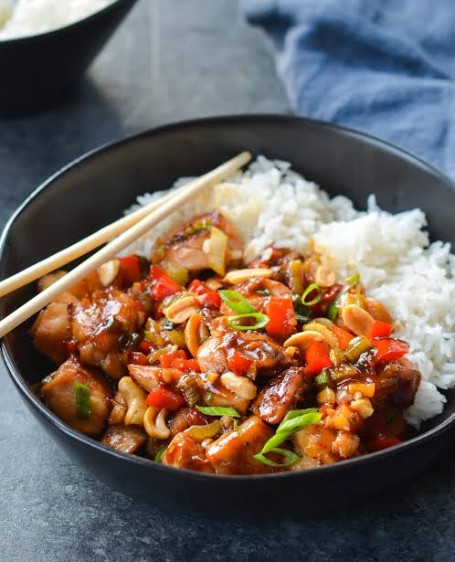

Kung Pao Chicken
To go back to the Index, Click Here

Kung Pao Chicken
A fiercely flavorful stir-fry hailing from the Sichuan province of China. It is famous for its spicy, slightly sweet sauce, the distinctive numbing heat of Sichuan peppercorns, and the satisfying crunch of roasted peanuts.
Ingredients
- 500g chicken breast (diced into small cubes)
- 2 tbsp soy sauce (divided)
- 1 tbsp rice vinegar
- 1 tbsp hoisin sauce
- 8-10 dried red chilies
- 1 tsp Sichuan peppercorns
- 1/2 cup roasted peanuts
- 3 green onions (chopped)
Steps
- Toss the diced chicken in 1 tablespoon of soy sauce and let it sit for 10 minutes.
- Mix the remaining soy sauce, rice vinegar, and hoisin sauce in a small bowl and set aside.
- Heat oil in a wok over medium heat and briefly fry the dried red chilies and Sichuan peppercorns until deeply fragrant and slightly darkened.
- Turn the heat to high, add the marinated chicken, and stir-fry until completely browned and cooked through.
- Pour the sauce mixture over the chicken, tossing rapidly until the sauce reduces and thickly coats the meat.
- Stir in the roasted peanuts and chopped green onions.
- Toss for 30 seconds more, then remove from the heat and serve immediately.